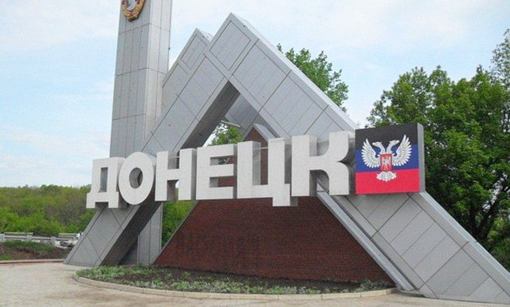
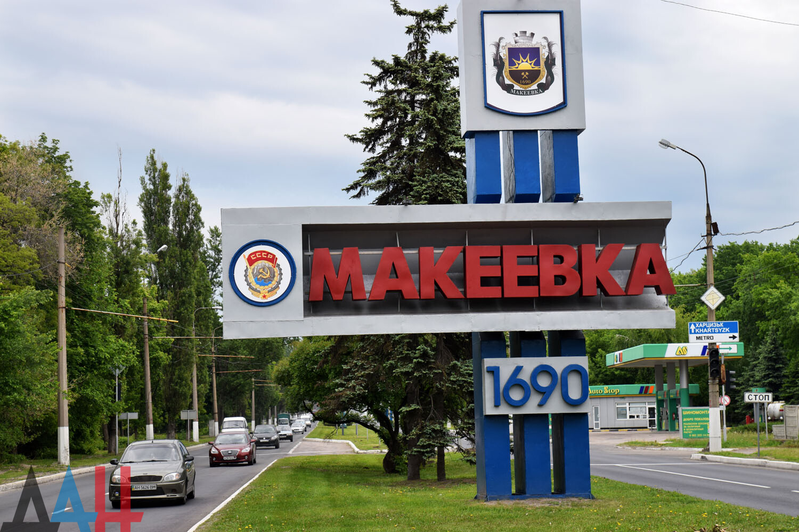
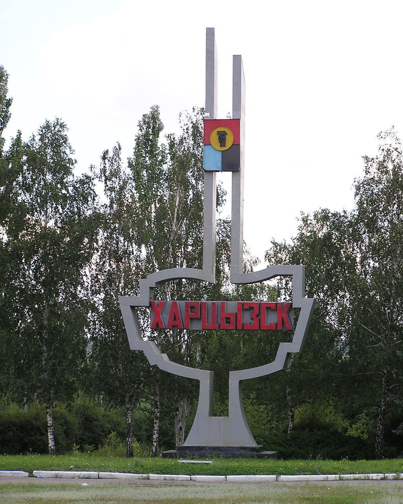
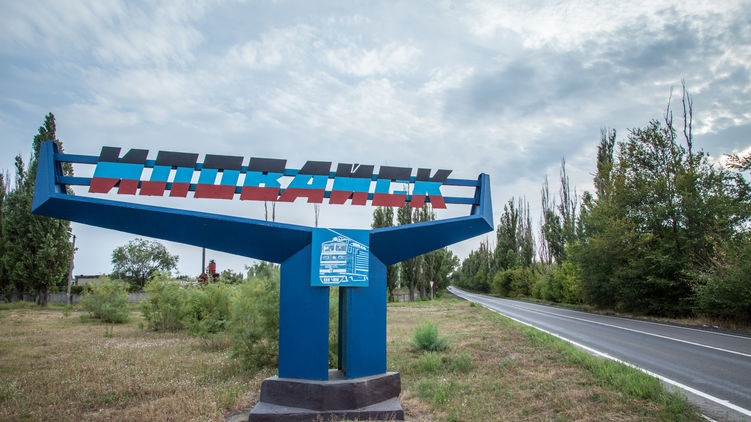
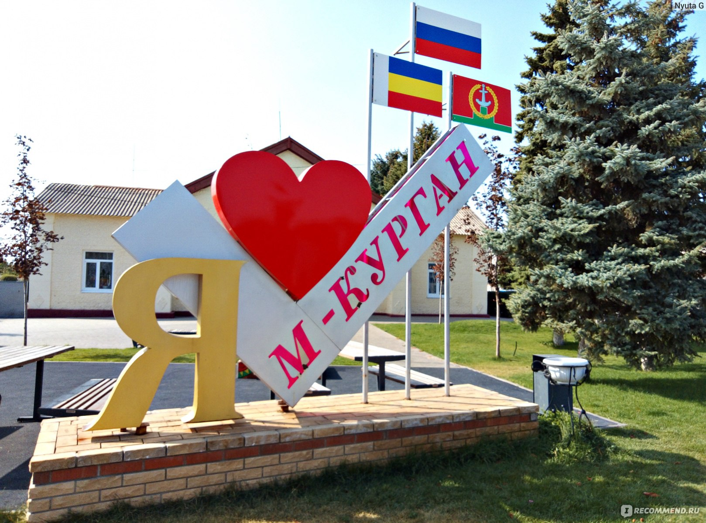
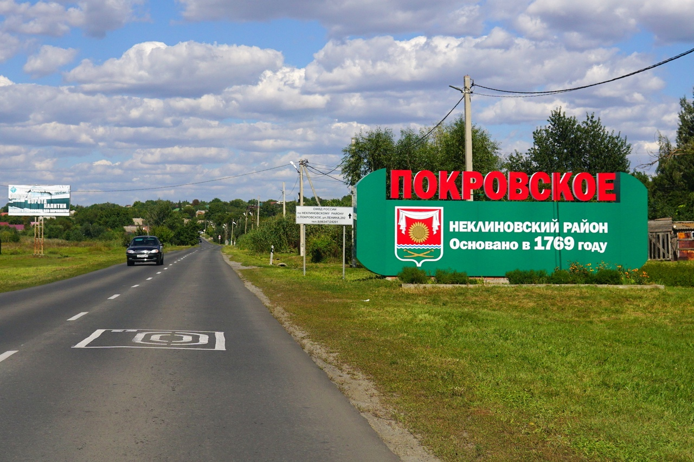
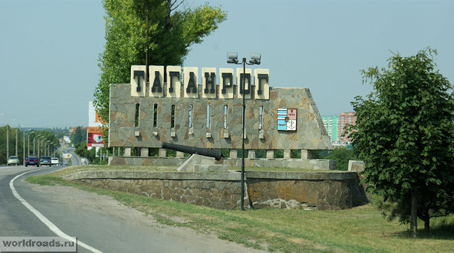
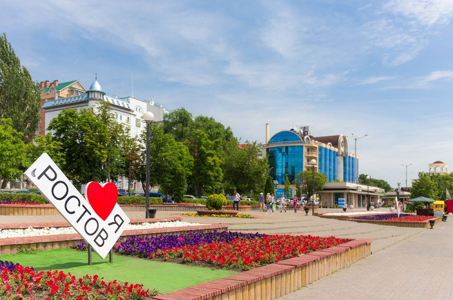

Компания Пегас-Такси
"Пегас-такси" занимается пассажирскими перевозками в направлении Донецк-Ростов-Донецк уже более пяти лет, за это время мы наработали опыт, который помог нам найти пунктуальных водителей, комфортный класс машин, чутких операторов и 100%-ный успех оставить Вам улыбку до конца дня.
Наши пункты остановки

Донецк
Донецк — очень зелёный город, здесь большое количество красивых парков, скверов, бульваров. Многие из них принадлежат предприятиям — например, сквер Киев-Конти, парк ДМЗ, парк отеля Виктория, парк Донбасс-Арены и т. д. Особое место занимает парк кованых фигур, где ежегодно проводится европейский конкурс кузнецов. В 2009 году закончилась реконструкция набережной реки Кальмиус. Круглый год открыт ботанический сад. Взято из Wikipedia
Макеевка
Адресная система города является самой сложной не только на Украине, но и во всей Центральной Европе. По некоторым оценкам в городе имеется 157 улиц с одинаковым названием, 65 улиц повторяющихся трижды, 12 — четырежды, а также 8 улиц — 5 раз, и даже улицы с шестикратным — ул. Октябрьская, и восьмикратным повторением — ул. Степная, причём 5 раз эта улица встречается в различных частях одного Советского района. Взято из Wikipedia
Харцызск
В городе открыт филиал Академии ФК «Шахтер» (Донецк). На чемпионатах области по футболу город представляет футбольный клуб «Харцызск». Также в городе работают спортивная школа, школа олимпийского резерва, Дворец спорта, стадион имени 10-летия независимости Украины и бассейн. В городе есть скалодром, ипподром. В Харцызске функционирует Центр физкультуры, спортивной и социологической реабилитации инвалидов. Взято из Wikipedia
Иловайск
Крупный железнодорожный узел, (станция стыкования Иловайск). Население города в основном занято на предприятиях по обслуживанию железнодорожного транспорта. Около 40 % занятых в народном хозяйстве трудятся в Иловайском отделении Донецкой железной дороги. Значительная часть населения работает у частных предпринимателей, многие совершают ежедневные поездки на работу в более крупные соседние города (Харцызск, Макеевка, Донецк). Нередки случаи работы вахтовым методом в России, Украине, Европейском союзе. Взято из Wikipedia
М-Курган
По преданию Матвеем звали атамана разбойников, промышлявших в здешних местах, грабивших проезжавших купцов. Он был убит и похоронен на склоне кургана на берегу реки Миус. Ныне на этом месте находится Матвеево-Курганская центральная районная больница и жилая застройка. Взято из Wikipedia
Покровское
По данным статистического справочника «Таганрогский округ. 1912-й год», в селе Покровском проводилось ежегодно две многодневных ярмарки. На них съезжались крестьяне и торговцы, мещане и служащие, рабочие и кустари не только с соседних сёл и хуторов, но и из Таганрога, Матвеева Кургана, Чалтыря и т. д. С 14 по 16 октября проходила Покровская ярмарка, а чуть ранее (с 28 августа по 1 сентября проходила Успенская ярмарка. На ярмарках шла торговля скотом и разными товарами. К праздникам готовились основательно. Обязательными были кулачные бои. Взято из Wikipedia
Таганрог
Автомобильное шоссе А-280 (часть европейского маршрута Е58 «Ростов-на-Дону — Вена») также проходит через Таганрог. В городе имеется остановочный пункт (автовокзал) ПАО «Донавтовокзал», связывающий город автобусным сообщением с областным центром — Ростовом-на-Дону и другими городами Ростовской области и других субъектов России, а также с населёнными пунктами Донецка, Луганска и Украины. Имеется пригородная автостанция, а также остановочные пункты междугородных автобусов малой вместимости возле вокзалов Таганрог-1 и Таганрог-2. Взято из Wikipedia